Visão do Produto
Lean Inception
Lean Inception é uma abordagem colaborativa para o planejamento e concepção de projetos ágeis introduzida por Paulo Caroli, um especialista em desenvolvimento ágil e práticas Lean. Ela combina os princípios do Lean Thinking e do desenvolvimento ágil para criar um ambiente de colaboração entre as partes interessadas, resultando em uma visão compartilhada e em um entendimento claro dos objetivos e requisitos do projeto.
A abordagem Lean Inception segue uma estrutura de atividades bem definida, conduzida em um workshop intensivo de alguns dias, inclui as seguintes atividades:
- Visão do produto
- É - NÃO É - FAZ - NÃO FAZ
- Esclarecimento do objetivo
- Personas
- Jornadas do Usuário
- Brainstorming de Funcionalidades
- Revisão Técnica, de Negócio e de UX
- Sequenciador
- MVP Canvas
MVP
MVP é uma versão simplificada de um produto ou serviço que contém apenas as funcionalidades essenciais para atender às necessidades básicas dos usuários (Ries, 2011).
É importante ressaltar que um MVP não é sinônimo de um produto de qualidade inferior ou que não irá evoluir. Pelo contrário, um MVP é desenvolvido de forma incremental, adicionando novos recursos mínimos aos produtos mínimos já validados. Conforme o feedback dos usuários é coletado e analisado, a equipe pode realizar melhorias e adicionar funcionalidades adicionais ao produto, aprimorando-o gradualmente (CAROLI, 2018).
Essa abordagem incremental do MVP permite que o produto evolua de acordo com as necessidades e preferências reais dos usuários, garantindo um desenvolvimento direcionado e focado em agregar valor. Dessa forma, o MVP serve como uma base sólida para o crescimento e aprimoramento contínuo do produto ao longo do tempo.
Etapas
Visão do produto
A visão do produto no Lean Inception é uma declaração compartilhada que define o propósito, os objetivos e os valores do produto. Ela fornece uma direção clara para a equipe e ajuda a garantir que todos tenham uma compreensão comum do que se espera alcançar com o produto. 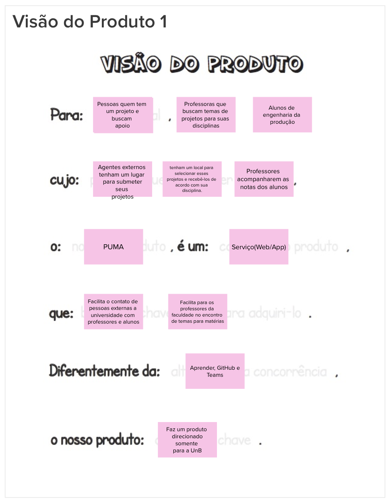
É - NÃO É - FAZ - NÃO FAZ
O "É - NÃO É - FAZ - NÃO FAZ" é uma etapa do Lean Inception para definir claramente as características e limites de um produto ou projeto. Ele consiste em categorias que descrevem o que o produto é, o que não é, o que faz e o que não faz.
É/Faz
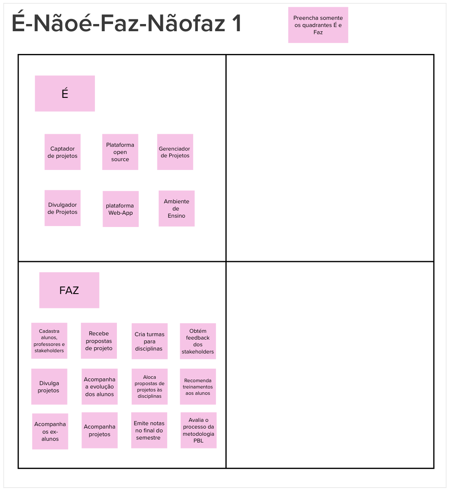
Não é/Não faz
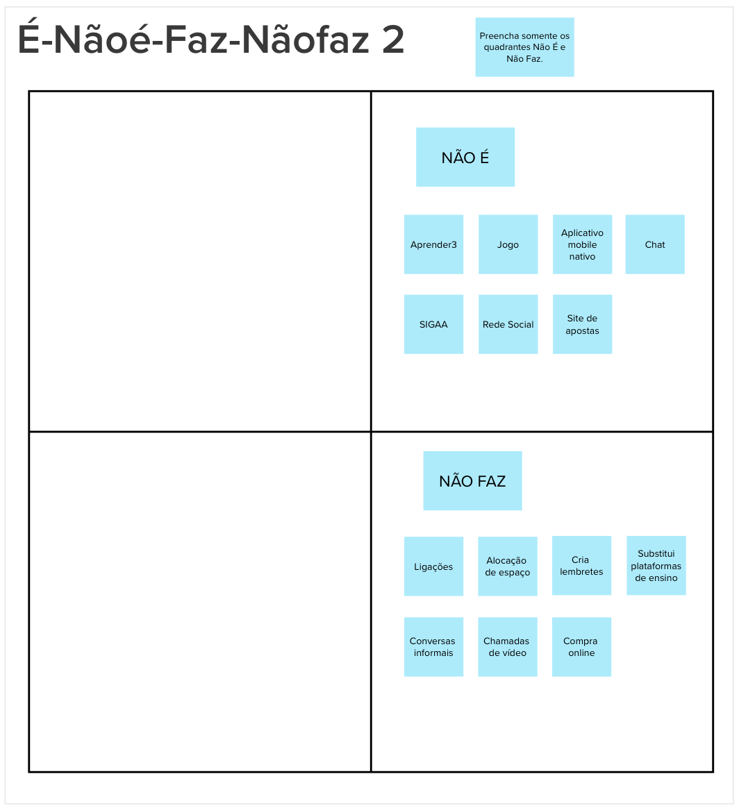
Esclarecimento do objetivo
Nesta etapa do Lean Inception, o resultado esperado é identificar os objetivos do negócio. Isso permite que a equipe compreenda o foco do projeto de forma clara e precisa. 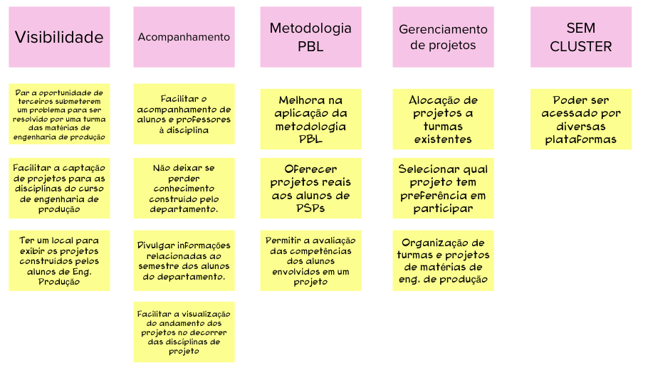
Personas
Durante essa atividade, o objetivo é compreender os usuários do produto e seus objetivos através da criação de personas. As personas fornecem uma representação realista dos usuários, oferecendo uma visão do produto com base em suas características e necessidades.
Persona 1
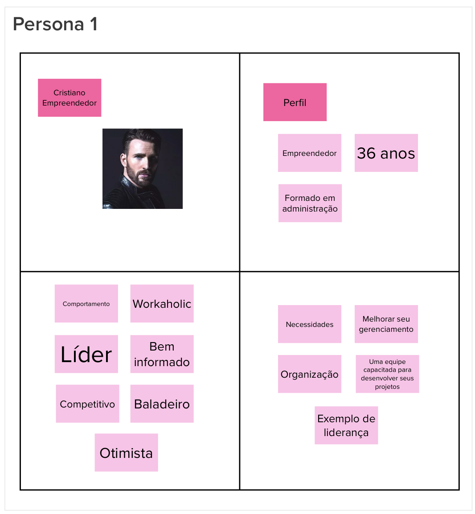
Persona 2
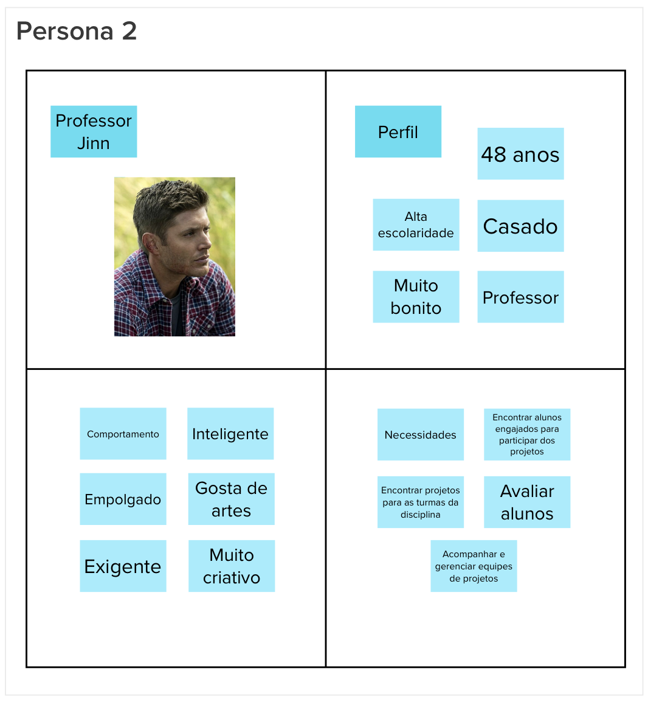
Persona 3
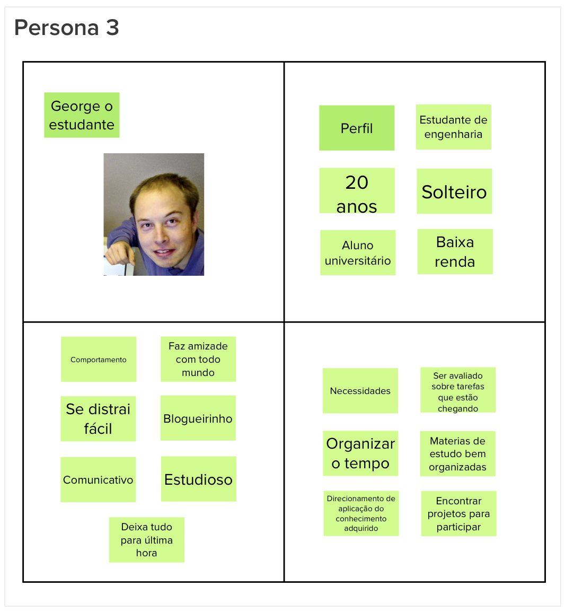
Jornadas do Usuário
O objetivo desta etapa é mapear a jornada de um usuário para alcançar um objetivo específico. Através da jornada, descreve-se a interação de uma persona com o produto em questão. Durante essa atividade, diversas jornadas podem ser identificadas e priorizadas, definindo o que estará presente no MVP (Minimum Viable Product). Isso ajuda a estabelecer as funcionalidades e recursos mais relevantes para incluir na versão inicial do produto.
Esta atividade foi elaborada nos semestres anteriores pelos alunos do curso de Design que fazem parte do time PUMA.
Brainstorming de Funcionalidades
As funcionalidades que o produto precisa ter para atender as necessidades dos usuários são listadas a partir dos objetivos e personas definidas. 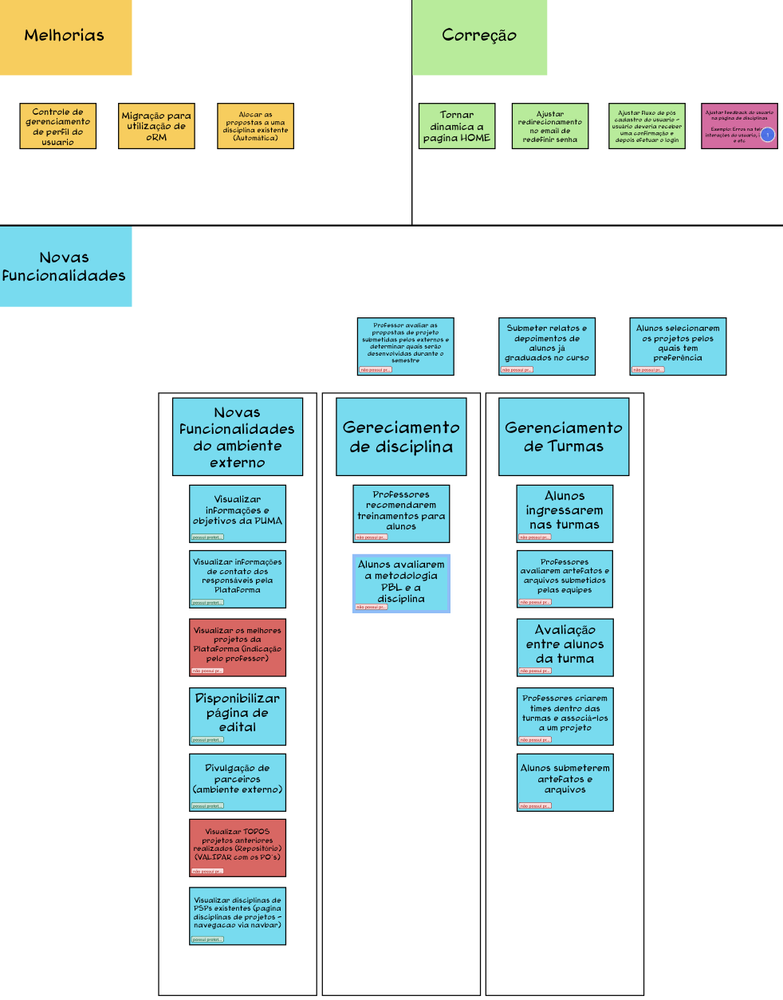
Revisão Técnica, de Negócio e de UX
A equipe realizou uma avaliação levando em conta o esforço, o valor e a experiência de usuário de cada uma delas tendo como insumo o conjunto de funcionalidades levantados através do brainstorming. Dessa forma, essa avaliação tem como objetivo normalizar o que foi levantado e descartar o que não está coerente com o projeto. 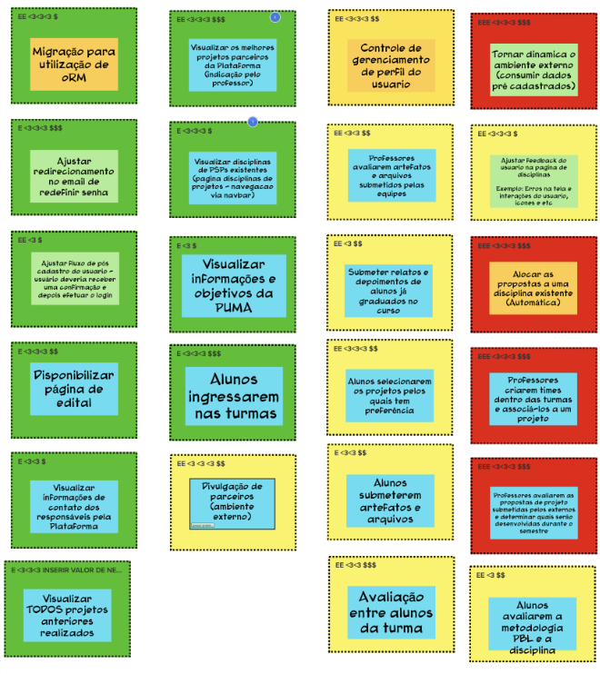
Sequenciador
Essa etapa tem como objetivo priorizar a implementação das funcionalidades propostas. Com base nas personas e nas jornadas de usuário mais relevantes, é possível determinar quais funcionalidades devem ser implementadas com maior rapidez. Essa decisão é tomada levando em consideração os parâmetros estabelecidos na etapa anterior, garantindo que as funcionalidades mais importantes sejam desenvolvidas inicialmente. 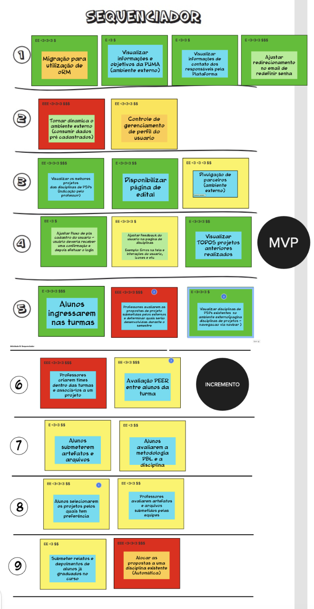
MVP Canvas
Esta etapa tem como objetivo detalhar o MVP e suas funcionalidades. Os blocos essenciais pra este produto são agrupados num superbloco, sendo estes:
- Proposta do MVP
- Personas segmentadas
- Jornadas
- Funcionalidades
- Resultado esperado
- Métricas para validar as hipóteses de negócio
- Custo & Cronograma
Esta atividade sintetiza tudo aquilo que foi produzido anteriormente durante a Lean Inception. Dessa forma, é possivel visualizar a proposta do MVP, que deve validar uma necessidade que abrange as personas e a hipótese levantada para o negócio.
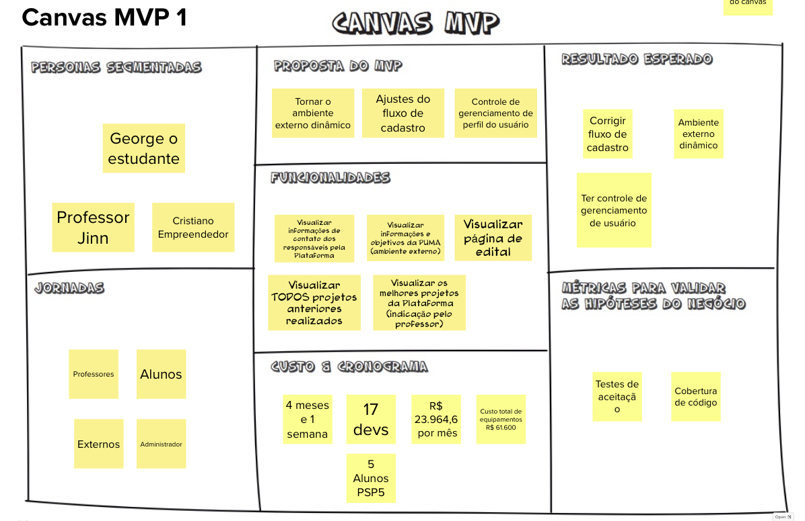
Referências Bibliográficas
CAROLI, P. Lean Inception: como alinhar pessoas e construir o produto certo. 1a. ed. São Paulo: Editora Caroli, 2018.
ZANETTE, F. MVP: como usar esse conceito para validar uma ideia e crescer com o feedback do mercado. Disponível em: https://resultadosdigitais.com.br/marketing/mvp-minimo-produto-viavel/.
Ries, E. (2011). The Lean Startup: How Today's Entrepreneurs Use Continuous Innovation to Create Radically Successful Businesses. Crown Business.
Kniberg, H., & Skarin, M. (2017). Agile Product Ownership: Collaborating with Stakeholders. C4Media.
Histórico de Revisão
| Data | Versão | Modificação | Autor |
|---|---|---|---|
| 02/06/2023 | 0.1 | Criação, estruturação do documento e adição do conteúdo | Guilherme Daniel Fernandes da Silva |